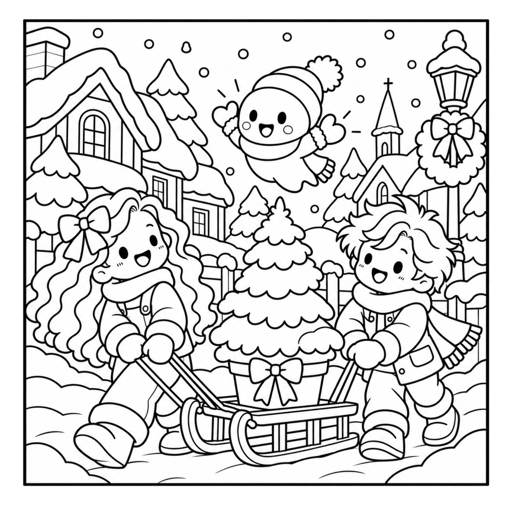
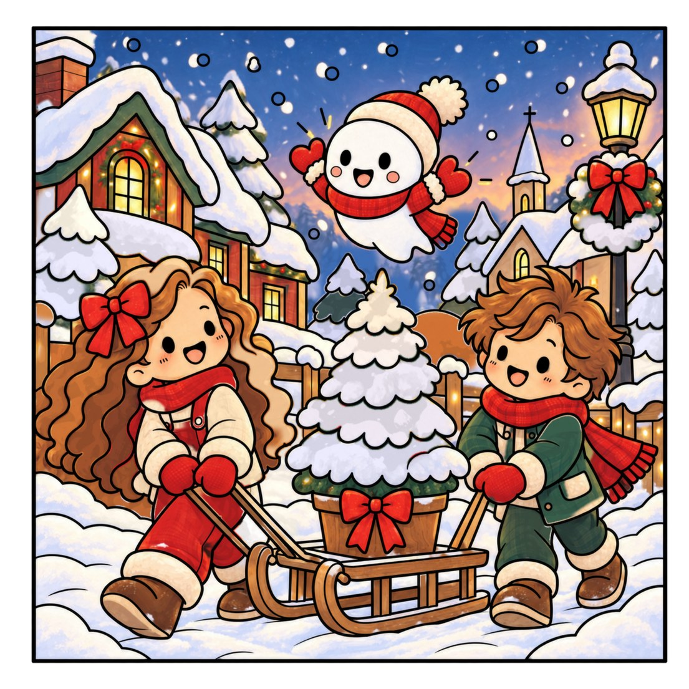
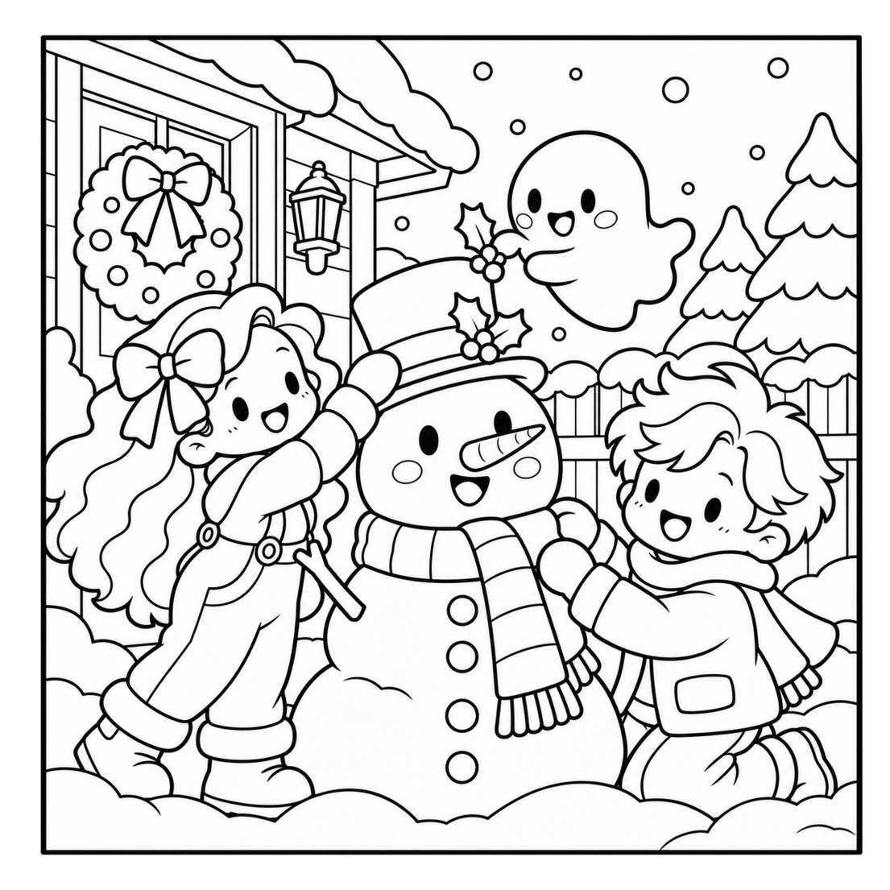
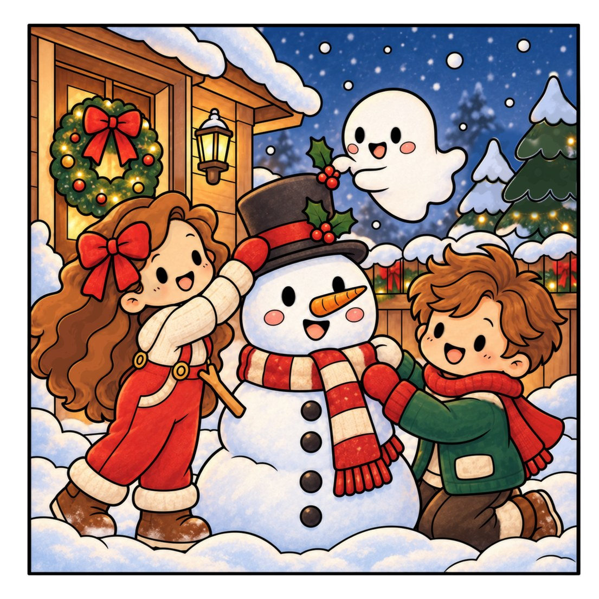

A Lia, o Tom e o seu amigo fantasma brincalhão, o Lumi, vivem uma aventura de Natal acolhedora, cheia de decorações, doces e presentes pensados com carinho. São 40 ilustrações para colorir.
Toca numa imagem para a ver em grande. Usa as setas ou desliza para mudar.
Dá vida às tuas páginas
Exemplos de pintura: a mesma página do livro, antes e depois de colorida. O livro traz as páginas a preto e branco.

Página original

Exemplo de pintura

Página original

Exemplo de pintura
Descobre a história
Histórias de Natal aconchegantes para colorir.
Lia, Tom & Lumi: A Christmas to Share
Um pouco de cor, muita magia de Natal. A Lia, o Tom e o seu amigo fantasma brincalhão, o Lumi, enchem a casa e a estação de comboios de enfeites para um Natal mágico, com coroas, laços vermelhos, lanternas acesas e luzes na neve. Depois fazem doces de Natal, embrulham presentes pensados para cada pessoa e levam trenós carregados pela estação coberta de neve, junto à árvore iluminada.
Da primeira caixa de enfeites até à festa na estação de comboios da aldeia, cada página é um pequeno momento de alegria para tornares teu. São 40 ilustrações para colorir, com verso em branco: a história completa num só livro.
Uma noite de hanbok à porta do palácio, um táxi para casa depois de beber demais e uma confissão à chuva. São 36 cenas originais de K-drama em traço fino, até ao último comboio para casa.
Um piquenique debaixo das cerejeiras junto ao rio Han, um guarda-chuva para dois e a confissão no terraço. São 36 cenas originais de K-drama em traço fino, inspiradas nos momentos que qualquer fã reconhece.
Uma roda-gigante que para lá no alto, um jantar com contrato e o segundo protagonista que sorri para a deixar partir. São 36 cenas originais em traço fino, inspiradas nos clichés de K-drama que qualquer fã reconhece.
Esta noite há festa na casa assombrada, mas a lanterna da lua desapareceu. Junta-te ao fantasma Milo, à gata Nova e à abóbora Pip e segue as pistas da biblioteca até à torre do relógio, a caminho de uma festa mágica de Halloween.